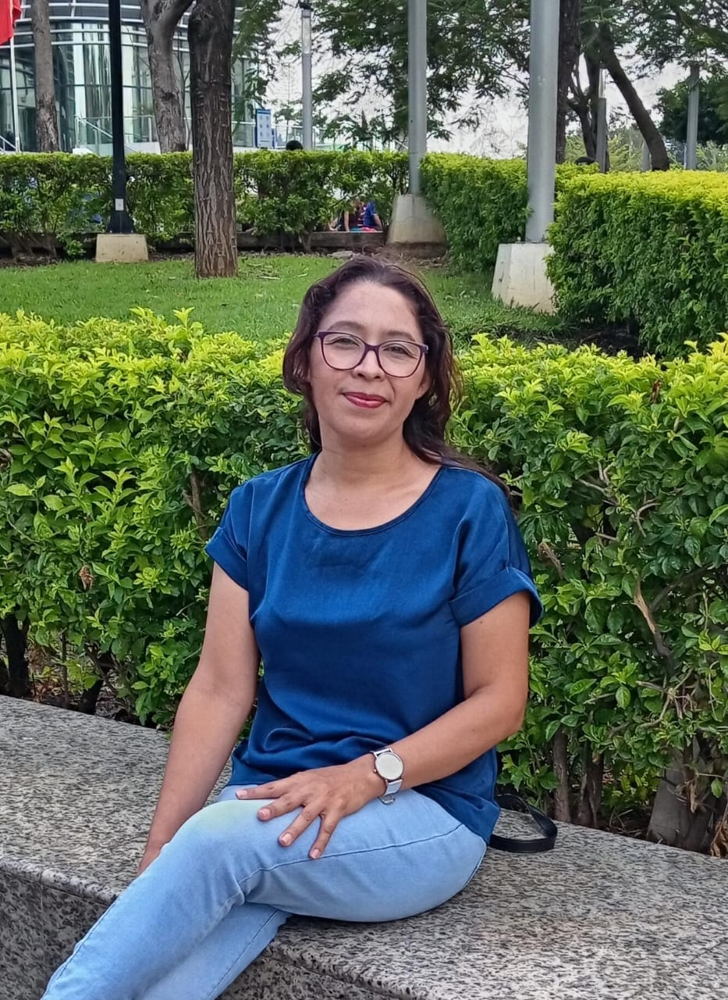

Licenciada en Psicología Clínica | Psicología de la Salud
Atención psicológica en línea - Lunes a Sábado de 8:00am a 4:00pm
Sobre mí

Soy licenciada en psicología clínica con una especialización en psicología de la salud. Me dedico a brindar apoyo psicológico a niños, adolescentes y adultos desde un enfoque humano, empático y profesional.
Nuestros servicios
• Terapia infantil
• Terapia individual, de pareja y familiar
• Manejo de los estados de ánimo
• Manejo del estrés post trauma
• Manejo de duelo
• Apoyo en la motivación del autoestima
• Acompañamiento a pacientes con enfermedades crónicas
Atención psicológica para niños
• Problemas de conducta
• Problemas de aprendizaje
• Duelos
• Entre otras dificultades que puedan afectar el bienestar mental